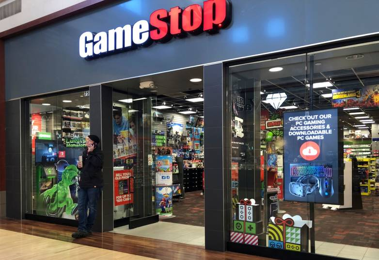

Proizvodnja Plejstešjn Sistema
"Proizvodnja PlayStationa je trajala čitavih 11 godina, tokom kojih je proizvedeno preko 100 miliona primeraka PlayStation konzole. Soni je prekinuo proizvodnju 23. marta 2006.Proizvodnja PlayStationa je trajala čitavih 11 godina, tokom kojih je proizvedeno preko 100 miliona primeraka PlayStation konzole. Soni je prekinuo proizvodnju 23. marta 2006.Proizvodnja PlayStationa je trajala čitavih 11 godina, tokom kojih je proizvedeno preko 100 miliona primeraka PlayStation konzole. Soni je prekinuo proizvodnju 23. marta 2006.Proizvodnja PlayStationa je trajala čitavih 11 godina, tokom kojih je proizvedeno preko 100 miliona primeraka PlayStation konzole. Soni je prekinuo proizvodnju 23. marta 2006."
Plejstejšn Prodanvice u Srbiji
"Proizvodnja PlayStationa je trajala čitavih 11 godina, tokom kojih je proizvedeno preko 100 miliona primeraka PlayStation konzole. Soni je prekinuo proizvodnju 23. marta 2006.Proizvodnja PlayStationa je trajala čitavih 11 godina, tokom kojih je proizvedeno preko 100 miliona primeraka PlayStation konzole. Soni je prekinuo proizvodnju 23. marta 2006.Proizvodnja PlayStationa je trajala čitavih 11 godina, tokom kojih je proizvedeno preko 100 miliona primeraka PlayStation konzole. Soni je prekinuo proizvodnju 23. marta 2006.Proizvodnja PlayStationa je trajala čitavih 11 godina, tokom kojih je proizvedeno preko 100 miliona primeraka PlayStation konzole. Soni je prekinuo proizvodnju 23. marta 2006."
PS Srbija
"Ovde su vam predstavljene faktički sve moguće slike PlejStejšn prodanvica raspoređenih i razbacanih po celoj Srbiji. Na osnovu izabrane slike možete odlučiti kako, kada i gde ćete otići da pokupite vašu potpuno novu, sjajnu konzolu koja više skoro ništa ne vredi!Na osnovu izabrane slike možete odlučiti kako, kada i gde ćete otići da pokupite vašu potpuno novu, sjajnu konzolu koja više skoro ništa ne vredi!"
Kako kreirati PSN nalog?

"Kada upalite konzolu, u zavisnosti da li je ona kupljena nova ili polovna, trebao bi da se pojavi veliki ekran sa predstavljenim korisnicima i njihovim slikama. Ako je konzola nova, to jest netaknuta, velika je verovatnoća da će biti potrebno inicijalno podešavanje (kao kada kupite nov računar ili mobilni telefon) i sam sistem će da vas vodi kroz razne opcije a vi ćete da stiskate odgovarajuće promptove za konfirmaciju. Ta podešavanja su npr datum i vreme, lokacija, metoda povezivanja sa internetom, prihvatanje raznih uslova itd. U većini slučajeva te korake prođete na brzinu jer sve se to može i naknadno promeniti."